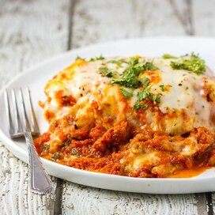

Lasagna recipe

Description
This recipe is super easy and fun to make! If you want to eat the best lasagna ever, make this lasagna.
Ingredients
- 1 pound sweet Italian sausage
- ¾ pound lean ground beef
- ½ cup minced onion
- 1 egg
- 12 lasagna noodles
- 16 ounces ricotta cheese
- 2 tablespoons white sugar
- 1 teaspoon Italian seasoning
- 4 tablespoons chopped fresh parsley
- ¾ pound mozzarella cheese, sliced
Steps
- In a Dutch oven, cook sausage, ground beef, onion, and garlic over medium heat until well browned.
Stir in crushed tomatoes, tomato paste, tomato sauce, and water. Season with sugar, basil, fennel seeds, Italian seasoning,
1 teaspoon salt, pepper, and 2 tablespoons parsley. Simmer, covered, for about 1 1/2 hours, stirring occasionally.
- Bring a large pot of lightly salted water to a boil. Cook lasagna noodles in boiling water for 8 to 10 minutes.
Drain noodles, and rinse with cold water. In a mixing bowl, combine ricotta cheese with egg, remaining parsley, and 1/2 teaspoon salt.
- Preheat oven to 375 degrees F (190 degrees C).
- To assemble, spread 1 1/2 cups of meat sauce in the bottom of a 9x13-inch baking dish. Arrange 6 noodles
lengthwise over meat sauce. Spread with one half of the ricotta cheese mixture.
- Bake in preheated oven for 25 minutes. Remove foil, and bake an additional 25 minutes. Cool for 15 minutes before serving.